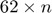
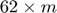

Correct patient identifying number mismatches
Unfortunately, there is a mismatch in the numbering of patients between the clinical data (source: ../clinical_data/Final_QMACP.xlsx) and the accelerometry (PY) data (source: ../motion_feature_data/). To fix this mismatch, we have the following guide:
Contents
Prerequisite Variables:
In order to complete transition between clinical and accelerometry numbering, you will need the following variables:
studyPatients = [2,3,4,5,6,7,8,9,10,11,12,13,14,15, ... 16,17,18,19,20,21,22,23,24,26,27,28,29,30,31,32,33, .... 34,35,36,37,38,39,40,41,42,43,44,45,46,47,48,49,50, ..... 51,52,53,54,55,58,59,60,61,62,63,64,66,67];
studyPatientsPY = [2,3,4,5,6,7,8,9,10,11,12,13, ... 14,15,16,17,18,19,20,21,22,23,24,26,27,28,29,30, .... 31,32,33,34,35,36,37,38,39,40,41,42,43,49,51,46, ..... 47,48,50,52,53,54,55,56,57,59,60,61,62,63,64,65, ...... 67,68];
Note: the two vectors contain the patient-identifying indices of patients we use in this study. studyPatients contains the indices of the patients from the clinical data spreadsheet whiile studyPatientsPY contains the indices from the accelerometry data. studyPatientsPY is not in perfect ascending order because the vector placement of the same patient is consistent across the two vectors. For example, the patient whose patient-identifying index in the clinical dataset is 45 (which is the 43th value of studyPatients) has an accelerometry dataset patient-identifying index of 51 (which is the 43th value of studyPatientsPY).
Definitions:
- Let i represent the row index (or indices if i is a vector) of a  matrix/table (e.g., sensors{sensor_Index,feature_Index}) of acceleromtery-based (e.g. motion features) data.
- Let j represent the row index (or indices if j is a vector) of a  matrix/table (e.g., patient_table) of clinical data.
Accessing the corresponding clinical index when working with accelerometry data:
Suppose you have the vector (or single number) of indices i from a motion feature matrix/table and you want to access the corresponding j indices (or single index) from a clinical matrix/table:
[~,sortOrder]=sort(studyPatientsPY); j = sortOrder(i);
Accessing the corresponding accelerometry index when working with clinical data:
Now consider the converse case: suppose you have the vector (or single number) of indices j from a clinical data matrix/table and you want to access the corresponding i indices (or single index) from a clinical matrix/table:
[~,sortOrder]=sort(studyPatientsPY); [~,i] = ismember(j,sortOrder);